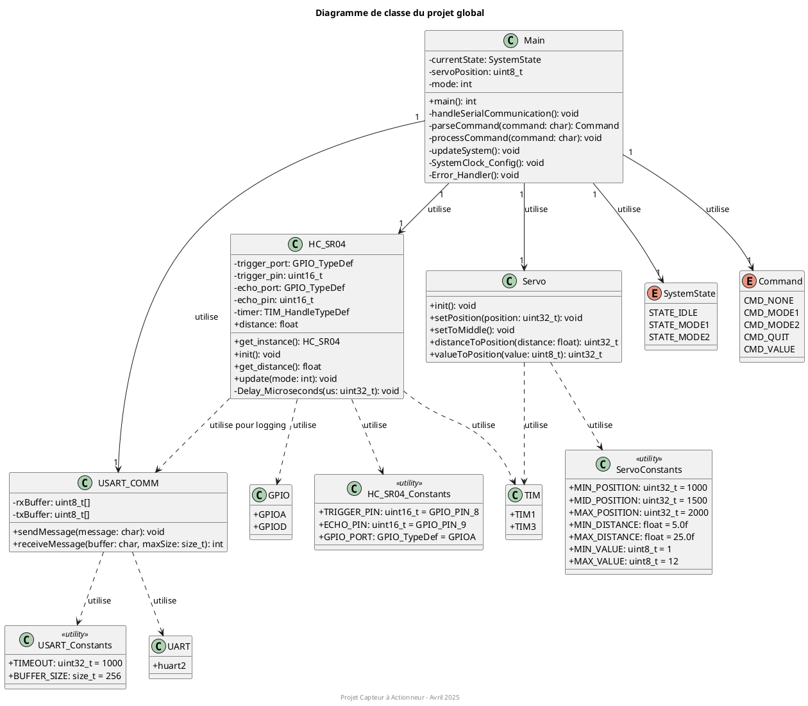
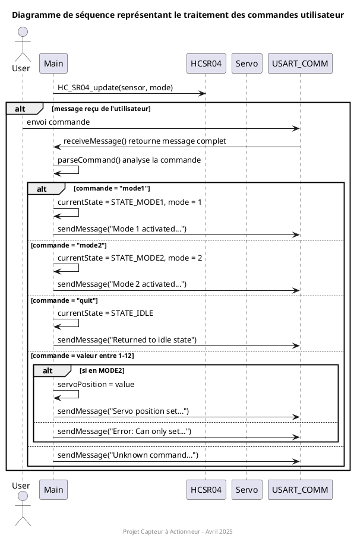
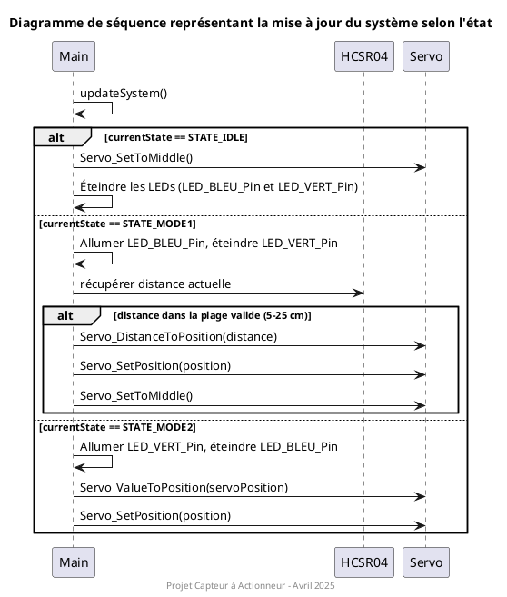
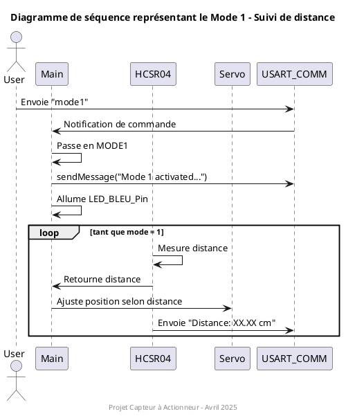
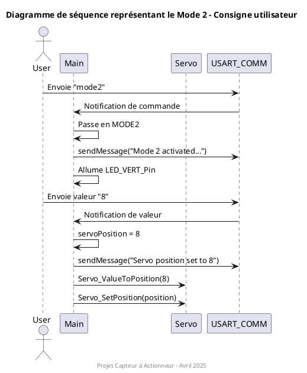

1. Introduction
1.1 Objectif du projet
Ce projet vise à développer un système embarqué sur microcontrôleur STM32F4 permettant d'interfacer un capteur de distance à ultrasons (HC-SR04) avec un servo-moteur. L'objectif principal est de créer un système capable de réagir à l'environnement (mesure de distance) ou à des commandes utilisateur (via liaison série) pour positionner précisément un servo-moteur.
Le système met en œuvre différentes technologies et compétences en développement embarqué :
- Mesure de distance par ultrasons
- Génération de signaux PWM pour contrôler un servo-moteur
- Communication série formatée
- Gestion d'une machine à états
- Développement modulaire avec séparation des responsabilités
1.2 Modes de fonctionnement
Le système propose trois modes de fonctionnement distincts :
-
Mode IDLE (repos) :
- Les LEDs sont éteintes
- Le servo-moteur est positionné au centre (position neutre)
- Le système attend une commande utilisateur
-
Mode 1 (asservissement par capteur) :
- La LED bleue est allumée pour indiquer ce mode
- Le servo-moteur se positionne proportionnellement à la distance mesurée par le capteur HC-SR04
- Plage de mesure valide : 5 à 25 cm
- Si la distance est hors de cette plage, le servo-moteur revient en position centrale
-
Mode 2 (contrôle par commande série) :
- La LED verte est allumée pour indiquer ce mode
- Le servo-moteur se positionne selon une valeur envoyée par l'utilisateur via UART
- Plage de valeurs acceptées : 1 à 12 (correspondant à différentes positions angulaires)
1.3 Machine à état
Le système est géré par une machine à états dont les transitions sont déclenchées par les commandes utilisateur. Voici le diagramme d'états correspondant :

Ce diagramme illustre :
- Les trois états principaux du système (IDLE, MODE1, MODE2)
- Les transitions entre états déclenchées par les commandes utilisateur
- Les comportements spécifiques à chaque état
- La gestion des cas particuliers comme les mesures hors plage
1.4 Comportements supplémentaires
En plus des modes de fonctionnement principaux, le système offre les caractéristiques suivantes :
-
Protocole de communication série structuré :
- Les messages sont encapsulés entre délimiteurs '<' et '>'
- Écho des caractères reçus pour confirmer la réception
- Messages d'état et d'erreur formatés
-
Gestion des erreurs :
- Détection des valeurs hors plage pour le capteur
- Vérification de la validité des commandes série
- Messages d'erreur explicites pour guider l'utilisateur
-
Retour d'information :
- Affichage régulier de la distance mesurée en Mode 1
- Confirmation des commandes reçues
- Indication visuelle du mode actif par LEDs
2. Conception
2.1 Diagramme de classe
Le diagramme suivant illustre la structure du code et les relations entre les différents modules du système :
Ce diagramme met en évidence :
- La structure modulaire du système avec une séparation claire des responsabilités
- L'implémentation du pattern Singleton pour le capteur HC-SR04
- Les interfaces entre le contrôleur principal et les différents modules périphériques
- Les constantes et limitations définies pour chaque sous-système
2.2 Diagrammes de séquence
Les diagrammes de séquence suivants montrent les interactions entre les différents modules du système :
Diagramme de séquence principal
Le diagramme principal présente une vue d'ensemble des interactions du système avec des références vers les diagrammes détaillés :

Ce diagramme montre :
- La séquence d'initialisation
- La structure de la boucle principale
- Les références vers les diagrammes plus détaillés
Traitement des commandes utilisateur
Ce diagramme détaille le processus de réception et de traitement des commandes utilisateur :
Il montre :
- La réception des commandes via l'interface UART
- L'analyse et l'interprétation des commandes
- Les différentes actions selon le type de commande reçue
Mise à jour du système selon l'état
Ce diagramme illustre comment le système réagit en fonction de son état actuel :
Il montre :
- Les actions spécifiques pour chaque état (IDLE, MODE1, MODE2)
- Le traitement des mesures de distance en MODE1
- La gestion des positions du servo-moteur
Mode 1 - Suivi de distance
Le diagramme suivant spécifie comment fonctionne le Mode 1 :
Ce scénario montre :
- L'activation du Mode 1 par l'utilisateur
- La mesure continue de la distance
- L'ajustement du servo en fonction de la distance mesurée
Mode 2 - Consigne utilisateur
Le diagramme suivant spécifie comment fonctionne le Mode 2 :
Ce scénario montre :
- L'activation du Mode 2 par l'utilisateur
- L'envoi d'une valeur de position
- Le positionnement du servo selon la consigne reçue
2.4 Brochage des différents éléments
Brochage du capteur HC-SR04
| Broche | Connexion | Description |
|---|---|---|
| VCC | Alimentation 5V | Alimentation du capteur |
| GND | Masse | Référence de masse |
| Trig | PA8 (GPIO) | Signal de déclenchement de la mesure (sortie STM32) |
| Echo | PA9 (GPIO) | Signal de retour de l'écho (entrée STM32) |
Brochage du servo-moteur
| Broche | Connexion | Description |
|---|---|---|
| VCC | Alimentation 5V | Alimentation du servo |
| GND | Masse | Référence de masse |
| Signal | PC6 (TIM3_CH1) | Signal PWM pour le contrôle de position |
Brochage des LEDs
| LED | Broche | Mode associé | Signification |
|---|---|---|---|
| LED Bleue | PD15 | MODE1 | Mode capteur actif |
| LED Verte | PD12 | MODE2 | Mode commande série actif |
| LED Orange | PD13 | Indication | Mesure valide (5-25 cm) |
| LED Rouge | PD14 | Indication d'erreur | Mesure hors plage |
Brochage de la Communication série
| Broche | Connexion | Description |
|---|---|---|
| TX | PA2 | Transmission de données |
| RX | PA3 | Réception de données |
2.4 Configuration des différents éléments
Configuration du servo-moteur
| Paramètre | Valeur | Description |
|---|---|---|
| Fréquence PWM | 50 Hz | Fréquence du signal de contrôle (période 20ms) |
| Position minimale | 1000 µs | Largeur d'impulsion pour 0° |
| Position centrale | 1500 µs | Largeur d'impulsion pour 90° |
| Position maximale | 2000 µs | Largeur d'impulsion pour 180° |
| Résolution | 1 µs | Résolution du positionnement |
Configuration du capteur HC-SR04
| Paramètre | Valeur | Description |
|---|---|---|
| Durée trigger | 10 µs | Durée de l'impulsion de déclenchement |
| Plage de mesure | 5-25 cm | Plage de distance valide pour l'application |
| Timeout | 10 ms | Délai maximum d'attente pour l'écho |
| Timer utilisé | TIM1 | Timer haute résolution pour la mesure temporelle |
| Pull-down | Activé | Sur la broche Echo pour stabiliser le signal |
Configuration de la communication série
| Paramètre | Valeur | Description |
|---|---|---|
| Interface | USART2 | Interface série utilisée |
| Vitesse | 115200 bauds | Débit de transmission |
| Format de trame | 8N1 | 8 bits de données, pas de parité, 1 bit de stop |
| Délimiteurs | '<', '>' | Caractères d'encapsulation des messages |
| Timeout UART | 1000 ms | Timeout pour les opérations de transmission |
| Taille buffer | 256 octets | Taille des buffers de réception et transmission |
3. Modules développés
3.1. Module HC-SR04
Le module HC-SR04 gère l'interfaçage avec le capteur ultrasonique pour mesurer la distance.
Fonctionnalités principales
- Initialisation des broches GPIO et du timer
- Génération d'impulsions précises de 10µs pour le trigger
- Mesure du temps d'écho avec une résolution microseconde
- Conversion du temps d'écho en distance (cm)
- Filtrage des mesures hors plage (5-25 cm)
- Mise à jour périodique des mesures en Mode 1
3.2. Module Servo-moteur
Le module servo-moteur permet de contrôler la position angulaire d'un servo standard via un signal PWM.
Fonctionnalités principales
- Initialisation du timer PWM (TIM3)
- Positionnement précis du servo à une valeur spécifiée
- Conversion de distances (5-25 cm) en positions servo (1000-2000 µs)
- Conversion de valeurs utilisateur (1-12) en positions servo
- Position centrale par défaut (1500 µs, 90°)
Détails techniques
- Signal PWM généré à 50Hz (période de 20ms)
- Largeur d'impulsion variable entre 1ms (0°) et 2ms (180°)
- Position centrale à 1.5ms (90°)
- Résolution temporelle de 1µs
3.3. Module UART
Le module UART gère la communication série avec l'utilisateur, offrant une interface formatée pour les commandes et les messages d'état.
Fonctionnalités principales
- Envoi de messages formatés avec délimiteurs
- Réception non-bloquante de commandes
- Écho des caractères reçus
- Gestion des dépassements de buffer
- Support pour les commandes textuelles et numériques
Protocole de communication
| Type de message | Format | Exemple | Description |
|---|---|---|---|
| Commande mode | <commande> |
<mode1> |
Change le mode de fonctionnement |
| Valeur servo | <valeur> |
<8> |
Positionne le servo en Mode 2 |
| Information | <message> |
<Distance: 15.32 cm> |
Retour d'information |
| Erreur | <message d'erreur> |
<Error: Message too long> |
Indication d'une erreur |
Commandes reconnues :
mode1: Active le Mode 1 (suivi par capteur)mode2: Active le Mode 2 (commande manuelle)quit: Retourne au mode IDLE-
1à12: Valeurs pour positionner le servo en Mode 2
3.4. Fonctions de démonstration
Pour valider le bon fonctionnement des différents modules, nous avons implémenté des fonctions de démonstration. Elles permettent de tester individuellement chaque composant (capteur HC-SR04, servo-moteur, UART) sans dépendre des autres parties du système.
Voici un résumé des fonctions de démonstration et des indicateurs de bon fonctionnement associés :
| Module | Fonction de démonstration | Indicateur de bon fonctionnement |
|---|---|---|
| Capteur HC-SR04 | HC_SR04_Demo |
Affichage de LED indicatives : • LED orange : distance valide (5-25 cm) • LED rouge : distance hors plage ou erreur |
| Servo-moteur | Servo_Demo |
Déplacement fluide entre les positions : • minimale (0°), • centrale (90°), • maximale (180°). |
| UART | USART_Demo |
Test interactif : • Envoi d'un message de test : "Testing USART communication... Please respond with <response> to continue." • Réception et validation de la réponse utilisateur : "Response received: continuing demo." |
3.5. Application principale
L'application principale orchestre tous les modules et implémente la machine à états qui gère le comportement du système.
Fonctionnalités principales
- Initialisation de tous les périphériques
- Boucle principale non-bloquante
- Traitement des commandes utilisateur
- Gestion des transitions entre états
- Mise à jour périodique de l'état du système
Stratégie de conception
- Architecture modulaire : Chaque module a une responsabilité claire et bien définie
- Machine à états : Gestion explicite des états et transitions pour simplifier la logique
- Gestion non-bloquante : Aucune fonction ne bloque l'exécution, permettant au système de réagir en temps réel
- Extensibilité : Facilité d'ajout de nouveaux modes ou comportements
4. Difficultés rencontrées et solutions
| Problème | Description | Solution mise en œuvre |
|---|---|---|
| Précision des mesures | Fluctuations importantes dans les mesures du capteur HC-SR04, rendant le positionnement du servo instable |
• Ajout d'un pull-down sur la broche Echo • Utilisation de TIM1 pour mesurer avec une résolution de 1µs • Implémentation de timeouts (10ms) • Filtrage des valeurs hors plage (5-25 cm) |
| Communication série bloquante | Les premières implémentations de la communication série bloquaient l'exécution principale |
• Réception non-bloquante des caractères • Gestion d'état pour reconstituer les commandes • Utilisation de délimiteurs '<' et '>' • Buffer statique pour conserver l'état entre appels |
| Stabilité du servo | Servo instable lors de petits changements de distance |
• Limitation de la fréquence de mise à jour (100ms) • Position centrale par défaut en cas d'erreur |
| Dysfonctionnement du servo-moteur | Après plusieurs essais, le servo-moteur a cessé de répondre correctement aux commandes |
• Test valide avec un autre servo-moteur • Vérification de la connexion électrique • Changement d'un fil de connexion |
5. Conclusion
Ce projet a permis de développer un système complet intégrant capteur et actionneur, avec une interface utilisateur série. Les principales réalisations sont :
- Architecture modulaire : Le système est divisé en modules réutilisables avec des interfaces claires.
- Machine à états robuste : La gestion explicite des états simplifie la logique et rend le comportement prévisible.
- Interface utilisateur intuitive : Les commandes simples et le retour d'information constant facilitent l'utilisation.
- Fiabilité : La gestion des erreurs, les timeouts et les vérifications de plages assurent un fonctionnement robuste.